Often times numbers come in expected ranges, and sometimes mixing ranges requires a little bit of math to adjust. For example: If you call Math.random(), the result is only from 0 - 1. If you want a different range, multiplication could help you 'stretch' that random number. If you wanted to get a random y value, you could multiply it by the height of the canvas, causing the final numbers to fall in a bigger.
let stretchedY = Math.random()*height;
This is the basic idea of mapping. We start with a value that has a natural range that we don't like (0 - 1) and we turn it into a corresponding value in a different range (0,height)
Since mapping values isn't always as simple as multiplying by a simple value, p5 has a map function that helps you covert values between different ranges. In order to tell it what we specifically want it to do, we're going to have to give it a lot of information.
map( value, originalMin, originalMax, newMin, newMax)
The map function is for converting from one range to another. In order to do this, you must first figure out the minimums and maximums that you're dealing with:
For example: Below is an example of the map function. The slider at the top controls the value of x, which can range from 0 to 100. The top bar is filled using this value, but the bottom two bars are mapped to different ranges. 0-256 and 0-360. As you drag the slider, notice that map maintains the proportions between the new ranges. When x is 50 it's halfway through its range, mapping that to a range of 256 would mean its 128, halfway through.
When mapping a value, you give the function the value to map, followed by its original range and its new range. So mapping the value of 25 from the range 0-100 to 0-500 would be:
let m = map(25,0,100,0,500);
And in our first example of stretching a random value from the range 0 - 1 to 0 - height. It was previously done
let rand = Math.random(); let newRand = map( rand, 0, 1, 0, height);
First, open the Mapped Rectangles workspace in CodeHS, which is an unfinished version of the sketch above.
There are currently two things being drawn: a circle that follows the mouse, and a rectangle. The goal will be to draw another circle inside the rectangle that is proportionally the same as where the mouse is in the canvas. When the mouse is halfway through the canvas, the circle will be halfway through the rectangle. To figure out where this circle should be, we're going to be mapping the value of mouseX from the window to the rectangle. We know all of the important information:
Value: mouseX
Original Range: 0 - width
New Range: 30 - 110
Add the following to the end of the draw function.
let x = map( mouseX, 0, width, 30, 110 ); let y = 30; circle(x,y,10);
You now have a circle that should be mapped between the sides of the rectangle, but only in the x direction. Run the sketch and wave the mouse from left to right to confirm that it stays between the two sides while being stuck on the top at y = 30;
Fix y
To unstick the circle from the top of the rectangle, we need to map it in a way similar to x. The value of x was mapped from 30 - 110 because the rectangle being drawn had an x of 30 and a width of 80. Your job is to fix the y value by mapping it in a similar way. This should be a separate call to map that doesn't interfere with the x mapping. Run your sketch to confirm that it works. The circle should remain entirely within the small rectangle.
Repeat for Two More Rectangles
Modify the draw function to draw two more rectangles:
rect(120, 200, 200, 75); rect(200, 50, 120, 100);
As was done with the first rectangle, draw a circle inside of each of these new rectangles using calls to the map function to keep it proportional.
In the end you should have three rectangles, each with their own circle mapped inside them.
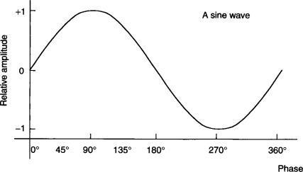
While sin is useful for angle calculations, it's also a function that oscillates back and forth between a very specific range of -1 and +1.
Open the Sine Graph workspace, which is attempting to make a graph similar to the one above.
To accomplish this, the program is using frameCount to represent an ever increasing angle, and then calculating the corresponding sine value:
//Ever-increasing angle, and a corresponding sin value let angle = frameCount; let sinValue = sin(angle);
But this is a flawed program. Like the graph above's axis labeling, the x is related to the angle and the y is related to the sine value.
//Drawing a circle derived from sin. let y = sinValue; let x = angle; circle(x,y,8);
If you run the sketch, you will see the flaw. The value of sin is tiny, ranging from -1 to 1. The canvas is much larger, with a height of 100, so the circle appears at the very top of the canvas.
We know that the sinValue has a natural range of -1 to +1. Since the window has a height of 100, let's map the sin value to be between 10 and 90 and then use that value as the y of our circle instead. Find the line of code where the value of y is established and modify it to be this:
let y = map( sinValue, -1, 1, 10, 90 );
Now, instead of using the sinValue directly as the y, we should see a value that is influenced by sinValue, but much larger.
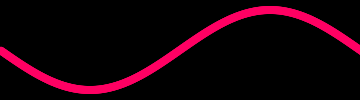
Note: Those with sharp eyes may notice that our sin graph is upside-down. This is due to the inversion of the y value in a canvas coordinate system.
A sin-wave repeats every 360 degrees. The graph that we are making shows exactly one period of the sine wave.
Modify the canvas to be 500 pixels wide and notice that it no longer shows exactly one cycle of the function.
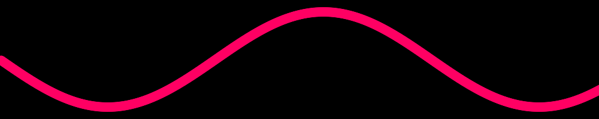
Using the angle directly as the x value won't work here, as it will show '500 degrees worth' of the graph. Instead we can map the angle from its natural range of 0 - 360 to a range of 0 - 500, which would match our new window size. Modify the x calculation to be this:
let x = map( angle, 0, 360, 0, 500 );
This will have a stretching effect as the 360 degrees of the angle are stretched through the width of the canvas.
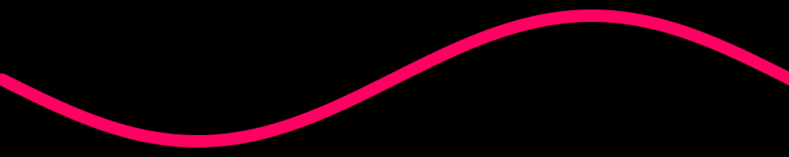
Open the Squiggly Circle workspace. It uses frameCount as an angle, and our familiar circle equations to gradually draw a circle.
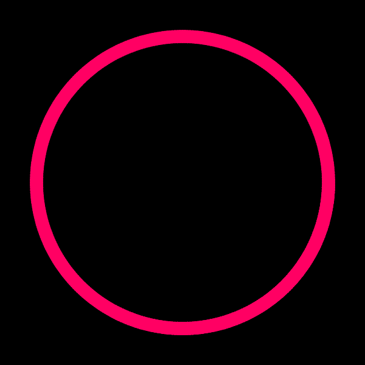
Right now, the radius is a constant value: 120. This causes the nice even circle to be drawn in the end. Boring! Let's incorporate a sin wave to cause it to squiggle.
Notice that you've already been given a sin value that is derived from the angle.
let sinValue = sin(angle*5);
This is generating a sin value that is cycling five times faster than our overall angle.
Your task is to use this generated sinValue to help you determine the radius of the circle as you cycle around. Instead of radius being a constant 120, map the sinValue from its natural range of -1 and +1 to a different range, like 100 to 140. This should cause the radius to 100 at some points, and 140 at others. The result should be a lumpy star shape.
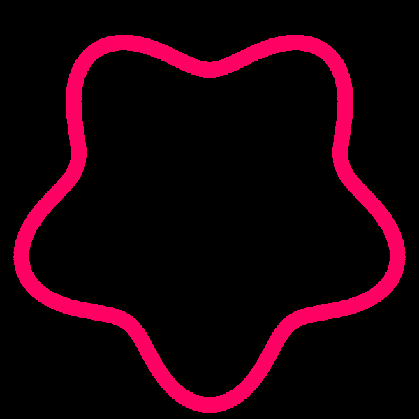
The reason that there are five lumps in our shape is because the angle is multiplied by five when we generate sinValue. You can fiddle with this multiplier to generate different squiggly circles
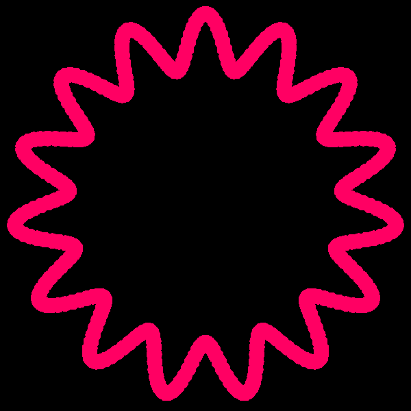
The sin functions natural oscillation it useful for creating back and forth movement in our animation.
let sinValue = sin(frameCount); let x1 = map( sinValue , -1, 1, 50, 350 );
Since sinValue shifts smoothly from -1 to +1, the value assigned to x1 will alternate smoothly between 50 and 350 at the same rate.
Open the Circle Illusion workspace, which uses this oscillation to draw a circle with a varying x value.
//Circle #1 let s = sin(frameCount); //x oscillates between 50 and 350 let x1 = map(s, -1, 1, 50, 350); //y is fixed at 200, horizonal; let y1 = 200; circle(x1,200,20);
Run the program and you'll see the circle drift from side to side, back and forth from 50 to 350.
Notice that the comments say Circle #1. This is because we want to add three more circle to this oscillating design. Following a similar strategy to the first circle, add the following circles
Circle #2
- x oscillates between 94 and 306
- y oscillates between 306 and 94
Circle #3
- x is fixed at 200
- y oscillates between 350 and 50
Circle #4
- x oscillates between 306 and 94
- y oscillates between 306 and 94
When done properly, running the sketch should get you the following:
When you run your code all four circles should move in unison, but we want them to be spaced out a little bit and not hit the middle at the same time. This means that Circle 1 is the only one that uses frameCount as the angle. Circle 2 should use sin(frameCount + 45) for its calculation Circle 3 should use +90 and Circle 4 should use +135.
Modify your code so that each of the four circles uses a different angle to calculate its sin value, as described. They are in a specific order so that they never meet in the middle and cause a little bit of an optical illusion when run.
The random() function performs its function, and will fit your needs nicely, but there are different types of random that can be more useful in some situations. In the window below, random numbers are repeatedly generated and drawn as a vertical line. Notice the difference in behavior of each.
Evenly Distributed Random: This gives an equal chance of each value. You can see that as values are added, they evenly spread across the window.
Gaussian Random: This random function gives a Normal Distribution of random numbers, grouped around a specific centerpoint.
Perlin Noise/Simplex Noise: This function generates random numbers, but in a way where sequential numbers are close to each other.
The results of the noise() function are what we will be exploring today. Its results are random, but not so chaotic as fully random.
Open the Noise Demo workspace, which uses frameCount to focus on a different x location each frame. At each x location, the sketch uses a random value to draw a vertical line, and a circle.
The intention is that these two objects have some randomness built into them: the brightness of the line, as well as the y location of the circle being drawn, but a weak attempt is made to simply assign the random value to represent them.
let rand = random(); let lineBrightness = rand; let circleY = rand;
Running the sketch shows that random()'s natural random of 0 to 1 is too small. The result being that each line is almost black, and the circle is drawn at the very top of the canvas.
To fix our code, we need to modify the lines that establish lineBrightness and circleY to be a map of the rand variable from its 'natural range' of 0 to 1, to a new range. For lineBrightness the range should be 0 to 255, and for circleY the range should be 0 to 50.
After this change you should see a much more chaotic design develop.
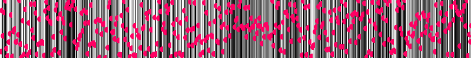
Absolute random values are a little chaotic, as they are never related to the one before it.
The noise() function is meant to return a number that is random-ish. It accepts a value as a parameter, and returns a random number, but it is specifically designed so that calling it twice with two numbers that are close to each other will result in random values that are close.
For example, consider these three calls to noise():
let n1 = noise( 5 ); let n2 = noise( 10 ); let n3 = noise( 5.01 );
n1 and n2 are generated using two number that are far away from each other: 5 and 10. The result will be two random values that don't seem related.
n1 and n3, however, were generated with numbers that are very close: 5 and 5.01. You can expect that the resulting generated values will be close as well.
The way that we are going to use this is i our code to call the noise() function using our x-location as the parameter. Modify the line that initializes rand to be a random number, so that it uses noise() instead:
let rand = noise( x * 0.01 ); //random();
With this change, run your program to see a much smoother randomness. Each random value is close enough to the one before it that a line will be drawn by all of the circles, and the background color will now look more like a smooth gradient than a chaotic flashing..
Notice that we are not passing the exact x value into the noise() function. All of our x values are exactly one apart, which is still considered 'far apart' for the noise function. If you change it to be noise(x), the results will still look random. Multiplying by 0.01 allows the generated value to be 'close', while still being related to our location.
Open the Circular Wandering workspace.
Your task will be to create the sketch above, which is very similar to the Squiggly Circle sketch from earlier in this assignment. A small circle is orbiting around a central point, but the radius is changing each frame, causing the wandering effect that you see.
The key difference here is that the radius of the circular path is not mapped to the predictable sin wave. Instead we are going to use our ever-increasing frameCount variable to help us keep generating a different noise value each frame.
let n = noise( frameCount*0.01 ); //A noise value that changes on every frame
Use the line above to generate a noise value n, and then map it from 0-1 to a new range to represent the radius, like 50 - 150. This should make your circle move in a circular orbit, but have a wandering effect like the sketch above.
Instead of having no call to background during the draw() function, there is a background drawn with a low alpha value. This will draw a background, but it won't make everything on the canvas fully disappear. Instead it will cause the trails effect that you see above:
background(0, 10); //black background, alpha of 10
Open the Stormy Weather workspace
During the very first p5 assignment you were asked to draw a house. Your job is to modify that workspace to add the 'stormy weather' effect you see above.
First copy your code from the House workspace into this one, then focus on the background(), which is usually chosen at the beginning of the draw() function. Instead of a single color, we'll choose a noisy gray color.
You can accomplish this by generating a constantly changing noise value
let n = noise( frameCount*0.03 );
Once you have this noise value, map it to the brightness of the background.
Notice that we're multiplying by a slightly larger value than we did for the Circular Wandering . This will cause the generated noise value to change more rapidly and produce more chaotic noise.
In our first noise sketch we generated the noise value by giving it an x-value.
let n = noise( x*0.01 ); //Every x gets a noise value
This allowed us to treat it as a 'noise space', where each x-location has a different noise value. We then interpreted as the darkness of a line, as well as the height of a circle.
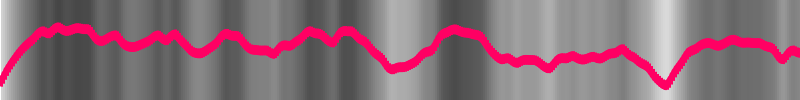
The noise() function is intended to be interpreted as a 'noise space', where ever location has a noise value, but we haven't been using its full function. In reality, we can give it a second parameter when generating noise(). We can think of this as the y coordinate in our noise space.
let n = noise(x*0.01, y*0.01); //Every xy gets a noise value
Like before, this call will give you a random-ish value that is similar to the values that are 'close' to it. This time, since the location has a y value, close can mean a small variation in the x OR the y. This produces a two-dimensional grid of noisy values.
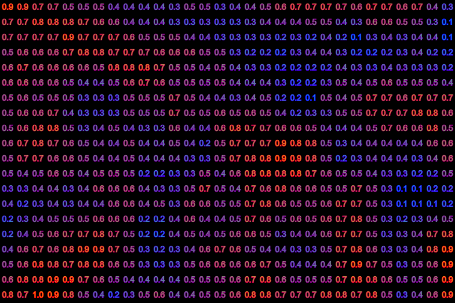
In this image, large values are RED and small values are BLUE. Notice how there isn't a fully red value next to a fully blue value, no matter what direction you head. Below is another example of a field, except the noise value is mapped to the brightness of a gray square.
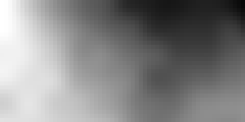
Open the Exploring 2D Noise Workspace
This workspace calculates a random location on the canvas, but it a little bit of math has been used to make it fall within a 16 x 16 grid of locations in the canvas.
Right now every square is white, due to the fill(255) line. Instead, we are going to tie each square's brightness to the noise value at its location. Use this line to help you generate the noise value:
let n = noise(x*0.01, y*0.01);
Then, use map() to map the noise value to the 0-255 range, and use the result as the fill of the square.
As a result, when you run your sketch you should be able to 'reveal' a peek at the noise space.
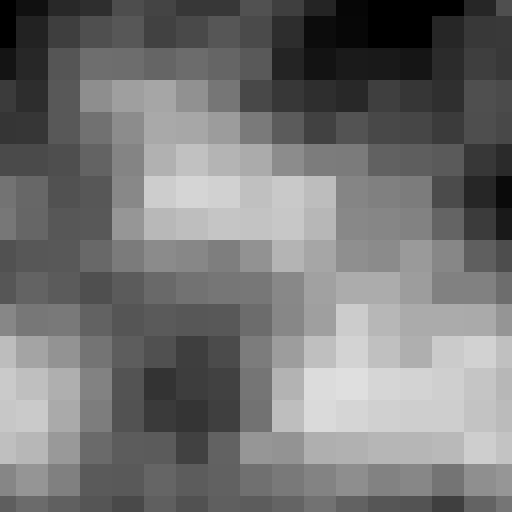
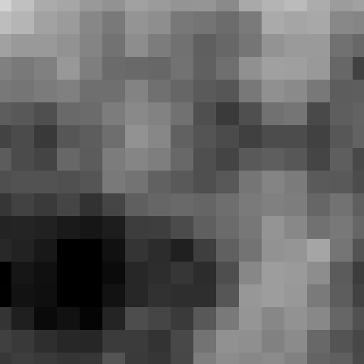
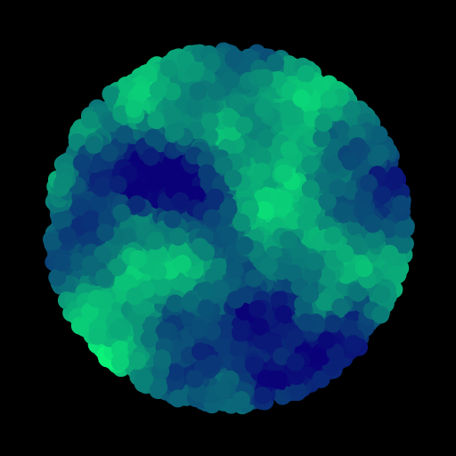
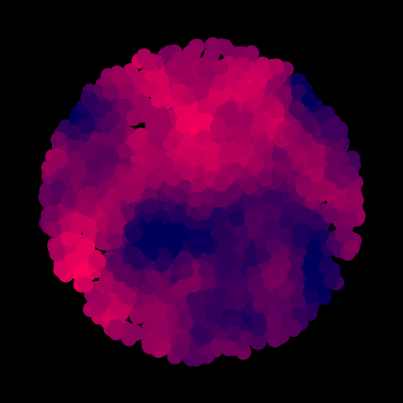
Create a new sketch named Distant Planet Generator, which will use the noise() function to generate an image like the ones above: A circular area with 'noisy' colors spattered within.
This effect is accomplished by removing the background() statement from draw(), and then:
- Choosing a random location within a circle
- Use the noise value to choose a color for the fill()
- Draw a single small circle
It will take a minute, but a planet should appear.
If you just choose a random x and then a random y, the resulting locations resemble a rectangle. To get random values that are arranged in a circle, we need to bring back our circle equations:
let x = centerX + radius*cos(angle); let y = centerY + radius*sin(angle);
The center of the circle is fixed, but if you choose a random angle and a random radius with these expressions, the result will be a circular area.
The color of the circle should be based on the noise value at that location. Like before, choose a noise value based on the xy location:
To get it to shift between two colors, map the noise value to the 255 range and then use it as the red, green, or blue value in the fill of the circle. The other two RGB values do not need to be zero. Tweak them until you like the colors that your planet turns.